Про кухню Японії
Японська кухня відома своїм мінімалізмом та акцентом на сезонність і свіжість інгредієнтів. Вона включає суші, сашимі, темпуру, рамен, удон та багато інших страв. Японці часто використовують соєві продукти, такі як тофу, місо та соєвий соус, а також водорості та рис. Смак умамі є важливим елементом японської кухні, що досягається завдяки додаванню комбучі та бульйону даші.
Виберіть країну
↑ Вгору
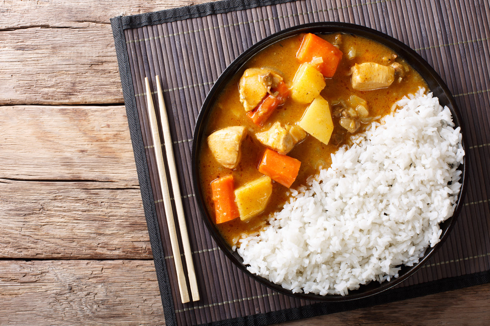
Японський каріГустий та ароматний карі, приготований з м'яса (зазвичай курки, яловичини або свинини), картоплі, моркви та цибулі, в основі якого лежить особливий карі-порошок або соус. Страва має м'який смак з помірною гостротою та подається з рисом.
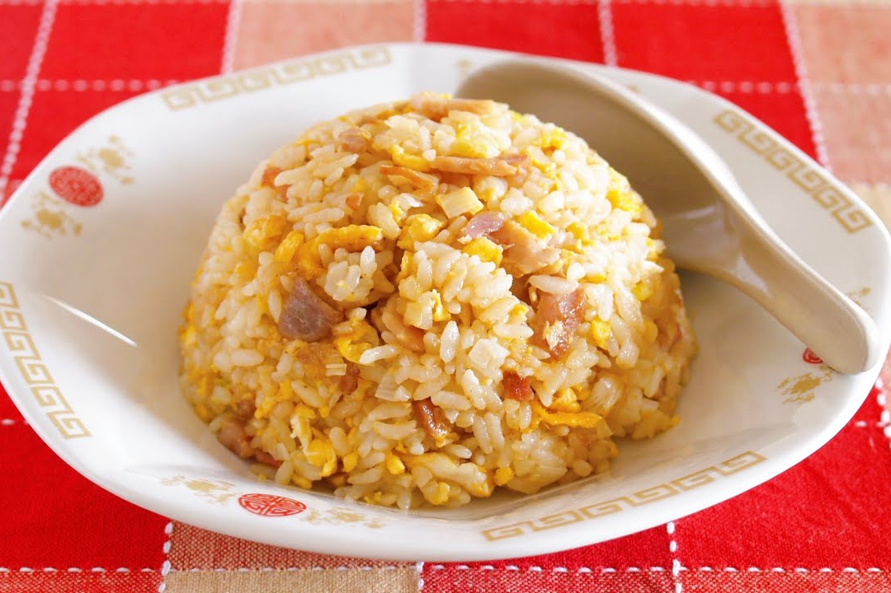
ЧаханЯпонська смажена рисова страва, що зазвичай готується з вареного рису, смаженого разом з овочами, яйцем, м'ясом або морепродуктами. Страва приправляється соєвим соусом та іншими спеціями, що надають їй легкий і ароматний смак.
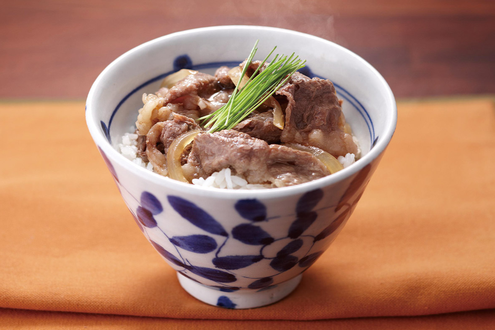
ҐюдонПопулярна японська страва, що складається з тонко нарізаних шматочків яловичини, тушкованих у соєвому соусі, мирині, цукрі та цибулі, поданих на гарячому рисі. Часто страву доповнюють яйцем, зеленню та червоним перцем для більшого аромату.

Кацудоняпонська страва, що складається з шматочків смаженого в паніровці свинячого відбивного (тонкацу), які подаються на рисі та заливаються яйцем, приготованим у соєвому соусі з цибулею та бульйоном. Це ситне і ароматне блюдо, яке часто подається з супом місо.
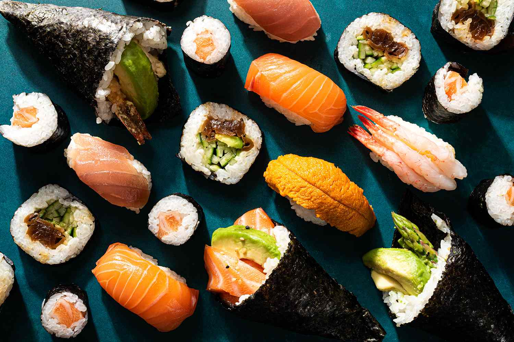
СушіТрадиційна японська страва, що складається з рису, заправленого оцтом, цукром і сіллю, з різними начинками, такими як сире рибне філе, морепродукти, овочі або омлет. Суші можуть подаватися в різних варіаціях, зокрема у вигляді ніґірі (рисові кульки з начинкою зверху) або макі (ролів, загорнутих у водорості).
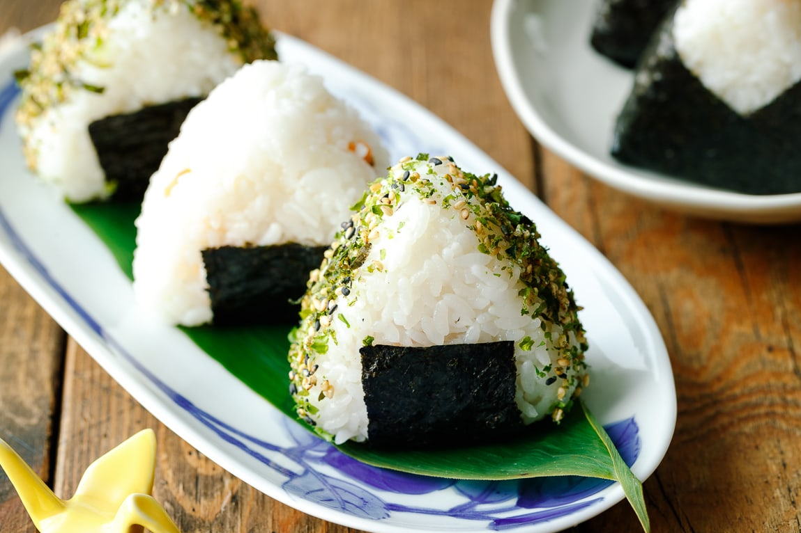
ОніґіріЯпонські рисові кульки або трикутники, зазвичай начинені солоними інгредієнтами, такими як мариновані сливи умебоші, риба чи морські водорості, та обгорнуті листям норі. Це популярна закуска або легка їжа, що зручна для перекусів та пікніків.
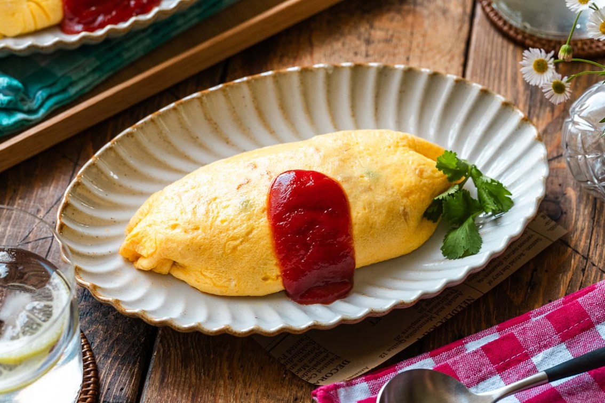
ОмурайсЯпонська страва, яка поєднує омлет і смажений рис. Рис готується з курятиною, овочами та кетчупом, а потім обгортається в м'який омлет. Зазвичай подається з кетчупом або соусом на верху. Це популярне комфортне блюдо, що часто зустрічається в японських кафе.
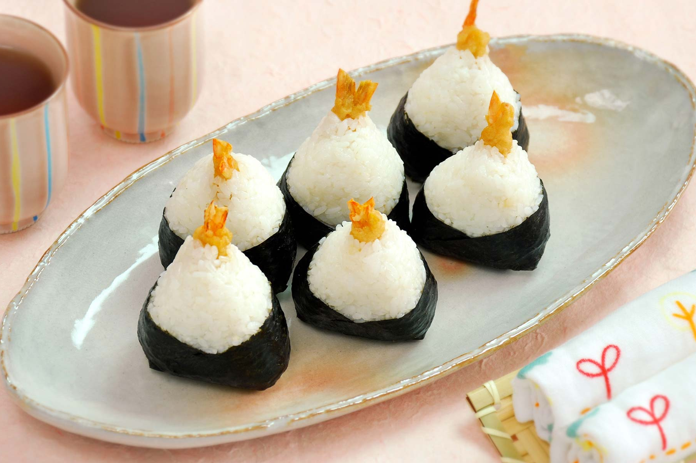
ТенмусуЯпонські рисові кульки або трикутники, начинені хрусткими шматочками темпури, зокрема креветками або овочами. Рис обгортається листям норі, а сама страва зазвичай подається з соєвим соусом або легким бульйоном.
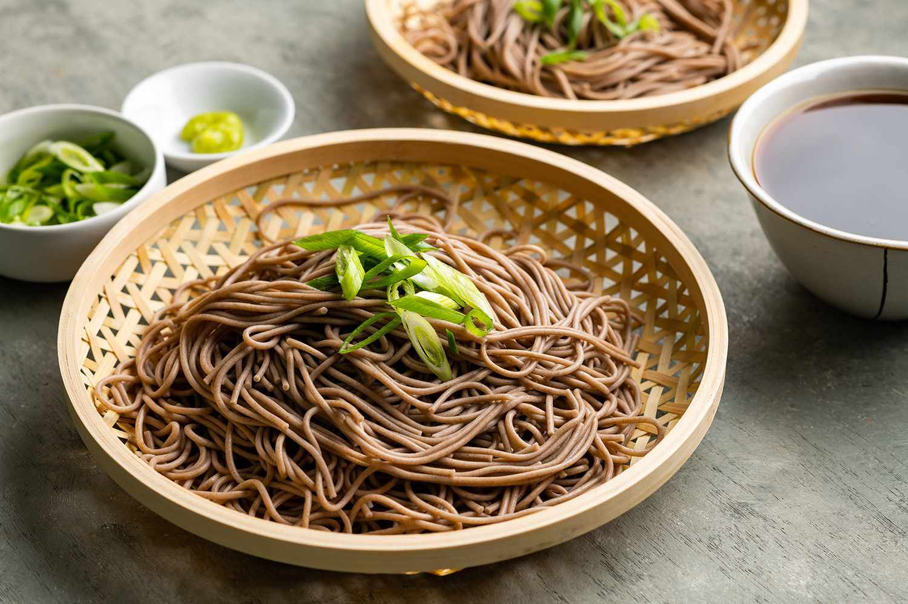
СобаГречана локшина, яка може подаватися як холодною, так і гарячою. Локшину зазвичай супроводжують соєвим соусом або бульйоном, а також додають різноманітні інгредієнти, такі як темпура, зелена цибуля, васабі чи яйце.
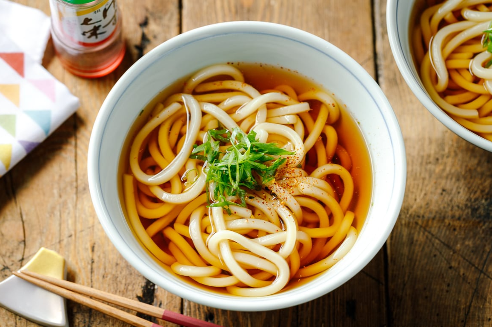
УдонТовста пшенична локшина, яка зазвичай подається в гарячому бульйоні на основі соєвого соусу, даші та мирину. Удон часто доповнюється різними інгредієнтами, такими як темпура, зелена цибуля, яйце, м'ясо або морепродукти.
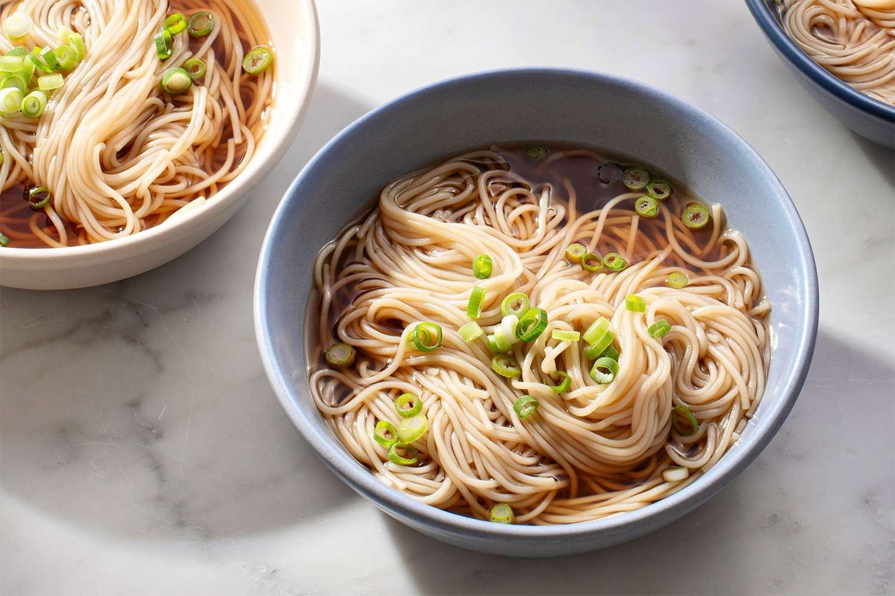
СоменТонка пшенична локшина, яка зазвичай подається холодною в літній період. Локшина супроводжується соєвим соусом або бульйоном і часто доповнюється нарізаною зеленою цибулею, васабі або імбирем для додаткового аромату.

РаменПопулярна японська страва, що складається з локшини, поданої в ароматному бульйоні, який може бути соєвим, місо або свинячим. До рамена часто додають різноманітні інгредієнти, такі як варене яйце, скибочки свинини, водорості, зелена цибуля і бамбук, що надають страві багатий смак.
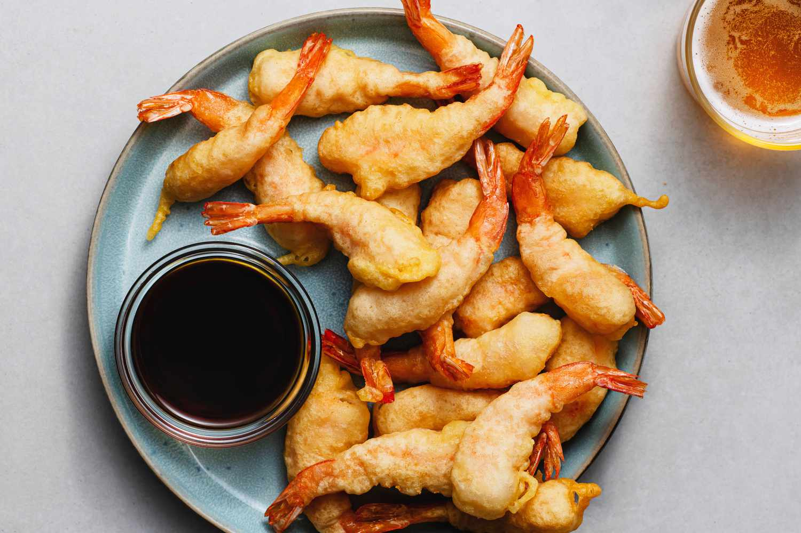
ТемпураЯпонська страва, що складається з овочів, морепродуктів або м'яса, обваляних в легкому клярі і смажених до хрусткої скоринки. Темпуру часто подають з соусом тенцу, який містить соєвий соус, мирин та дафне, для додаткового аромату.

ТонкацуЯпонська страва, що складається з відбивної зі свинячої котлети, обваляної в паніровці та смаженої до хрусткої скоринки. Подається з капустою, рисом та спеціальним соусом тонкацу, який має солодко-гострий смак.
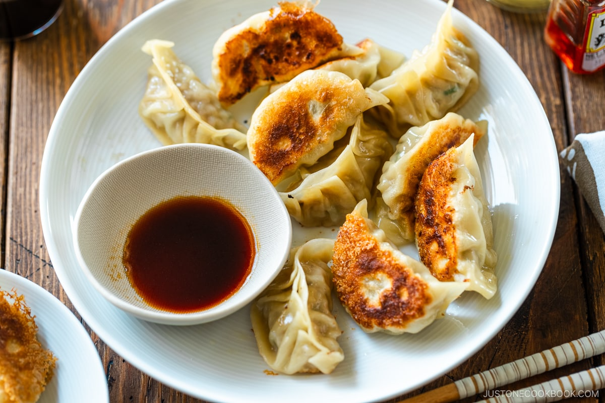
ҐьозаЯпонські пельмені, зазвичай з начинкою з меленого м'яса (переважно свинини) та овочів, загорнуті в тонке тісто. Вони можуть бути смажені, варені або на пару, і часто подаються з соєвим соусом, оцтом та чилі для додаткового смаку.
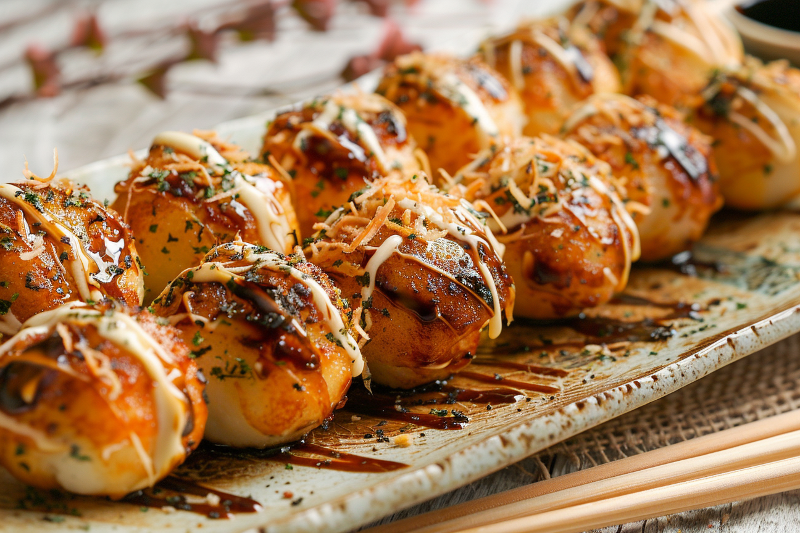
ТакоякіЯпонська закуска у вигляді маленьких кульок з тіста, начинених шматочками восьминога, зеленню та імбиром. Кульки смажаться на спеціальній сковороді з поглибленнями та подаються з соусом такоякі, майонезом та рибними пластівцями.
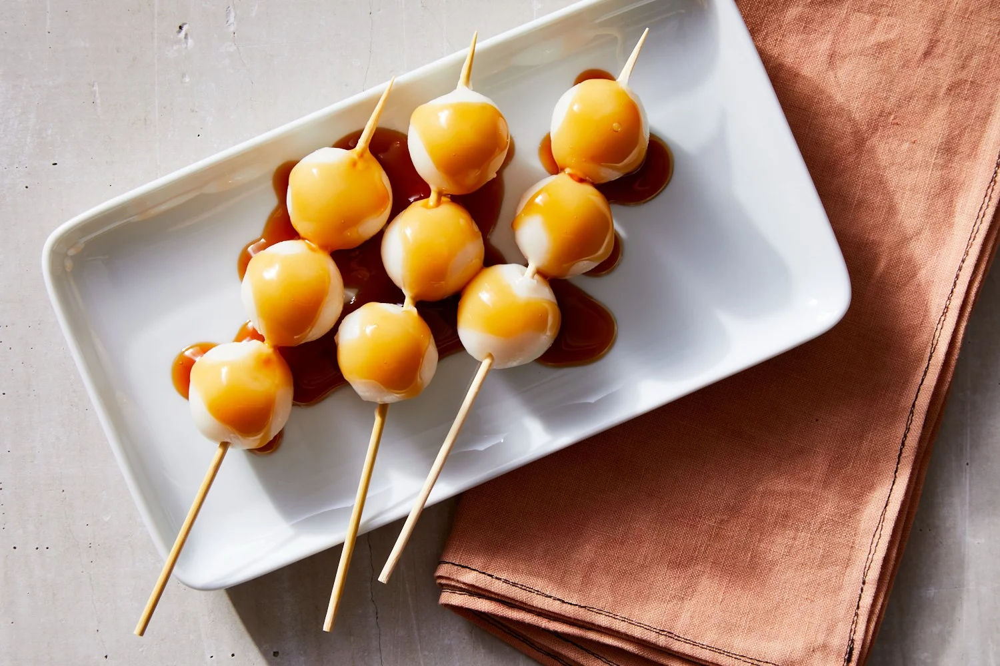
ДанґоТрадиційний японський десерт, що складається з кулеподібних шматочків рисового тіста, нанизаних на шпажки. Данго зазвичай подається з різними приправами, такими як солодкий соус із соєвого соусу (мірін) або з посипкою з соєвого борошна (кінако).

МочіЯпонський десерт, що складається з м'якого, липкого рисового тіста, яке обгортає різні начинки, такі як червона паста з бобів або фруктові наповнювачі. Мочі має ніжну текстуру і часто подається як частина святкових страв або як десерт до чаю.
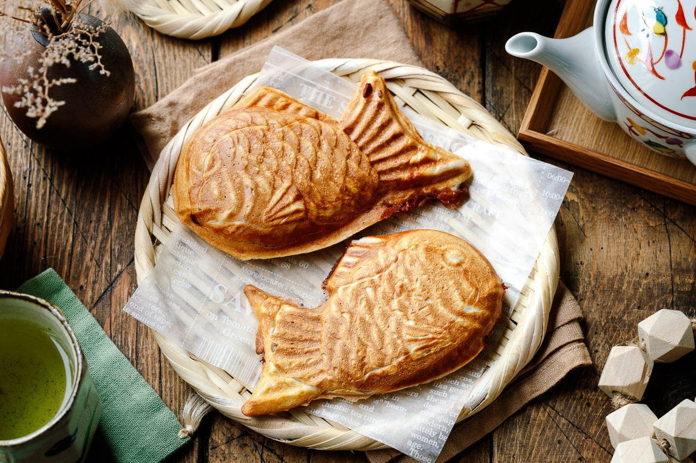
ТаякіЯпонський десерт у вигляді рибки, заповненої солодкою начинкою, зазвичай з червоної бобової пасти (анко), шоколаду або крему. Тісто для таякі готується на спеціальній сковороді, що надає десерту характерну форму рибки, і він часто подається гарячим.
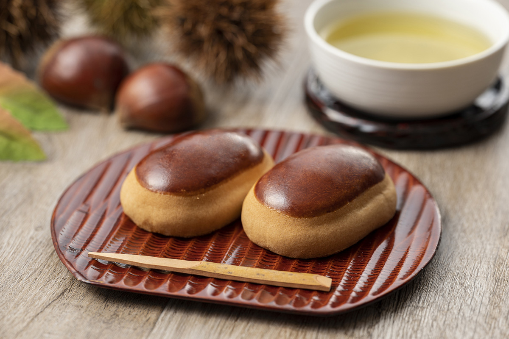
МанджюТрадиційний японський десерт, що складається з м'якого пшеничного тіста, яке зазвичай заповнене солодкою червоною бобовою пастою (анко). Манджю може мати різні форми і розміри, а також бути приготованим на пару або смаженим.